Integridad
Descarga directa de Digital Corpora; MD5/SHA-1 de los 21 segmentos idénticos al registro de FTK Imager.
Proyecto 03 · Tercer parcial · Análisis forense de disco
Informe forense de la imagen Narcos-1 (Digital Corpora, escenario 2019 Narcos): la computadora asegurada en Petone, vinculada a Steve Kowhai. Se respondieron 15 preguntas de extracción con salida comprobable y se interpretó la actividad del equipo: rutas al aeropuerto de Wellington, la biblioteca de Eastbourne como punto de entrega, una reserva de vuelos recibida por Discord, TrueCrypt, esteganografía y borrado seguro.
01 / OBJETIVO Y ALCANCE
Dos pasajeros procedentes de Australia fueron interceptados en el aeropuerto de Wellington con 1 kg de metanfetamina; los posibles puntos de entrega eran la biblioteca de Eastbourne y un inmueble en Petone. El objetivo fue extraer de la imagen del equipo asegurado valores exactos con su ruta y su salida verificable, y separar en cada interpretación lo observado de lo que no puede confirmarse.
02 / METODOLOGÍA
Descarga directa de Digital Corpora; MD5/SHA-1 de los 21 segmentos idénticos al registro de FTK Imager.
Caso PR03_Kowhai en Autopsy 4.23.1 (zona Pacific/Auckland, sin Cyber Triage) y verificación cruzada con dissect en solo lectura.
Registro, UserAssist, Prefetch, BAM, Timeline, historial web, LNK, Zone.Identifier y $UsnJrnl.
Cada salida guarda el comando en su primera línea; todas las horas en UTC y NZDT.
03 / RESULTADOS
Hash de la imagenMD5 c63a3d19e9c9495b573f45be544e50f9 (coincide con FTK)
WindowsWindows 10 Pro 1809 · compilación 17763.107 x64
Perfil principalC:\
UserAssistNTUSER.DAT\
NavegadoresChrome (History) · Edge EdgeHTML (WebCacheV01.dat)
MD5 History (Chrome)f3f979c6dee9fbb7cbdf5818aaa4b723
airport crystals.jpgC:\
Creación airport crystals31/01/2019 10:25:18 NZDT (30/01 21:25:18 UTC)
MD5 dropoff.jpg7feb763bebe42c3a3464c9ee3bb1d3e8
Modificación dropoff02/02/2019 14:06:06 NZDT (01:06:06 UTC)
Reservaciones de vueloC:\
MD5 Method run.jpg69b225bc0ef5a0c003f1e2a6646aaf92
MD5 BNE.pngdffa98bdd7371d1806adb09db27ba283
EsteganografíaImage Steganography 1.5.2 Setup.exe · MD5 c9b7c382dea6d7f45ae1bf437860cb69
CifradoC:\
Discord / Timeline…\
04 / ANÁLISIS
Logística. flightbookings.PNG es una reserva Brisbane → Wellington del 16/02/2019 para dos viajeros, descargada desde un adjunto de Discord (Steve_K.PNG); BNE.png muestra Brisbane y llegó por ProtonMail; dropoff.jpg es la ficha de Google Maps de la biblioteca de Eastbourne. No muestran los nombres de los viajeros ni prueban que la reserva se usara.
Capturas de rutas. Method run.jpg (ruta que termina en Eastbourne, marcada «Home») y airport crystals.jpg (Eastbourne → aeropuerto vía Petone) se crearon con Snip & Sketch segundos después de consultar esas rutas en Google Maps, según Windows Timeline y el historial de Chrome.
Discord. Instalado y usado: Prefetch, BAM y Timeline; Local Storage registra el canal 539550615072800768, el mismo del adjunto, y un correo en caché que empieza por crayfish1980@proton. No hay mensajes, por lo que contenido, interlocutores y autoría no pueden concluirse.
Esteganografía y cifrado. Ambos alcanzan descarga, instalación y ejecución. En TrueCrypt, el asistente de creación de volúmenes generó Documents\secret (5 MiB) y MountedDevices registra TrueCryptVolumeE. En esteganografía, package.jpg apareció mientras el programa estaba abierto. Ambos archivos se borraron, package.jpg con un patrón de borrado seguro (ZZZZZZZ.ZZZ) mientras CCleaner estaba activo, así que su contenido no puede confirmarse.
Hipótesis. El equipo se usó para planear la logística de entrega y para ocultar y destruir información. Alternativa: otra persona usó la sesión, o un uso legítimo de cada herramienta por separado. Evidencias adicionales: registros de Discord y ProtonMail, y el volcado de memoria del mismo equipo.
05 / EVIDENCIAS
Capturas de Autopsy de cada respuesta, salidas de comandos de la correlación (recortadas a las líneas relevantes) y las imágenes recuperadas de la evidencia.
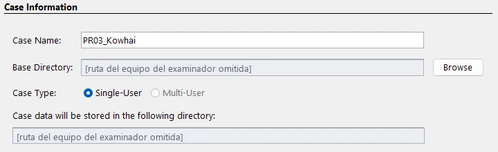
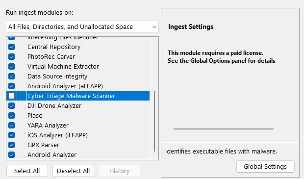
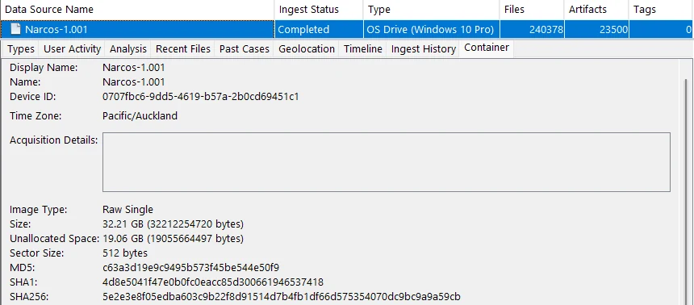
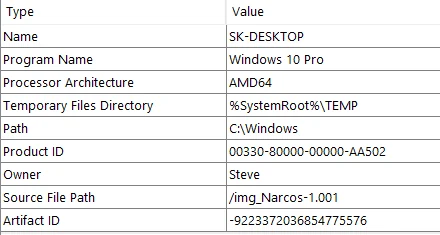
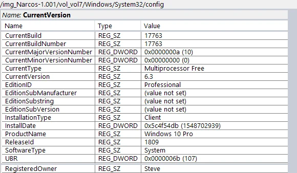
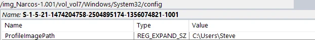
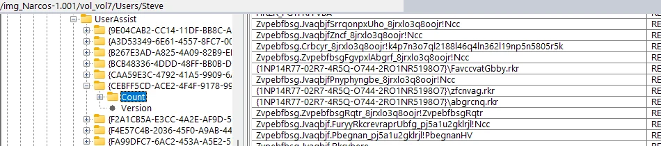
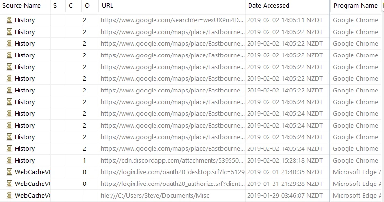
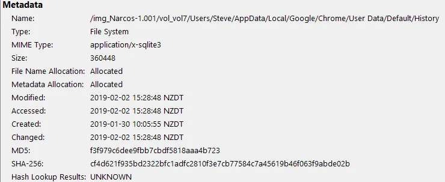
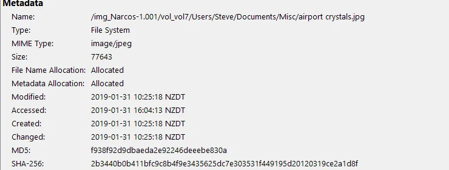
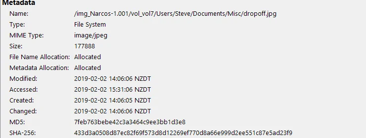
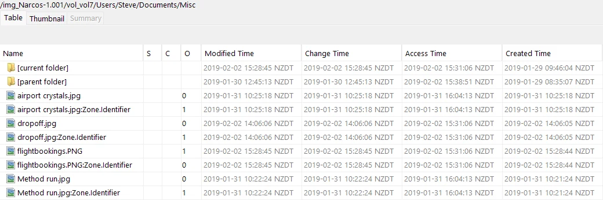
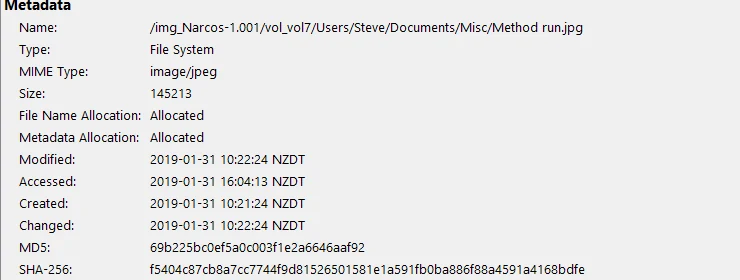
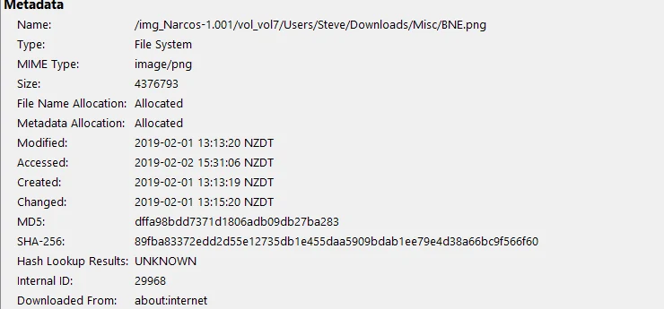
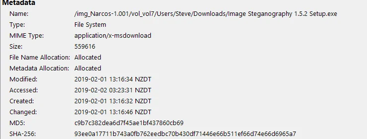
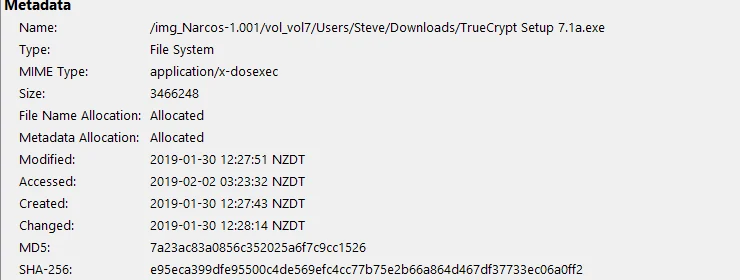
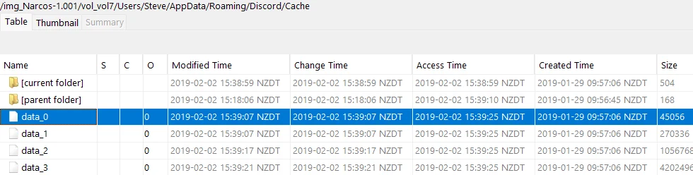
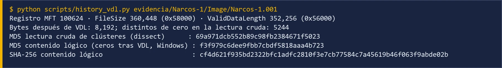
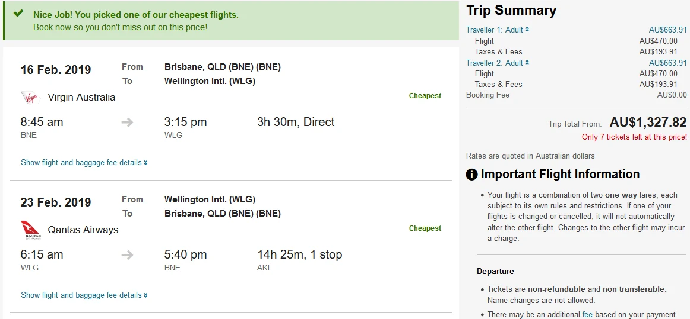
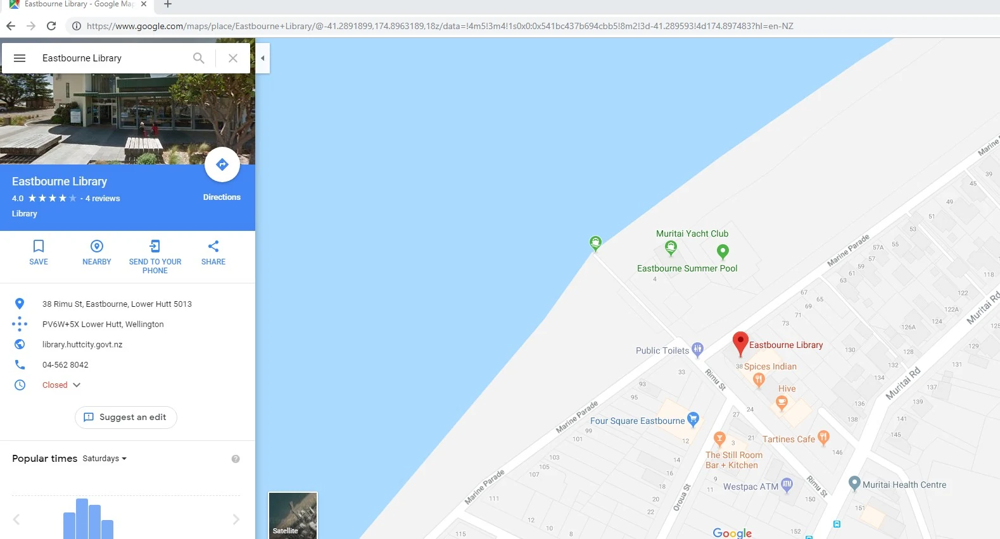
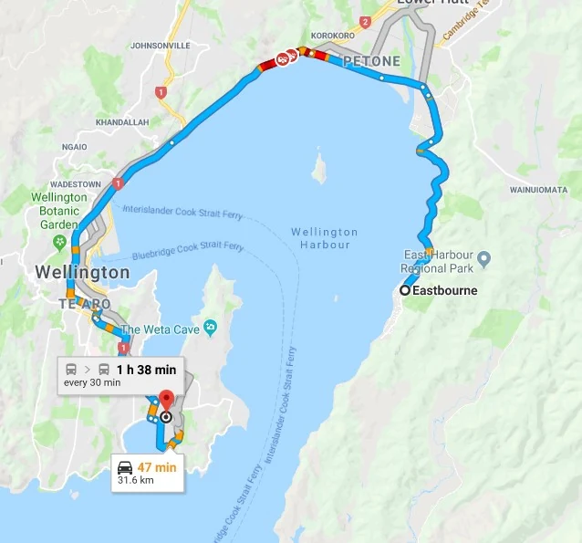
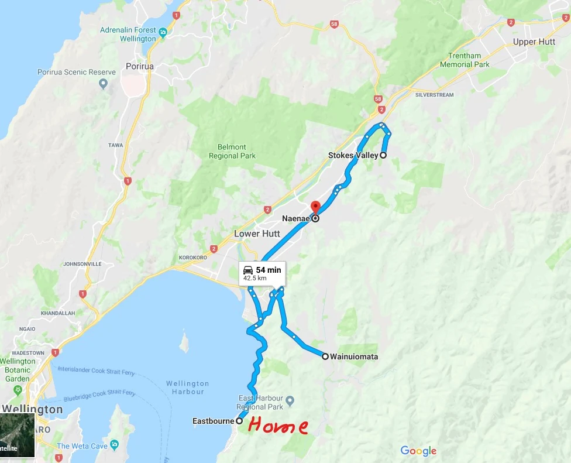
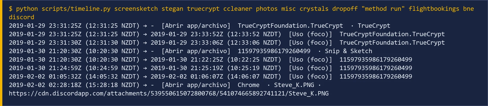
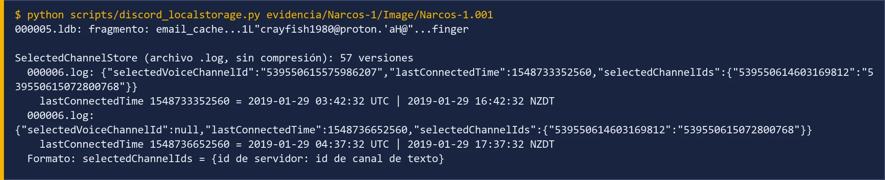
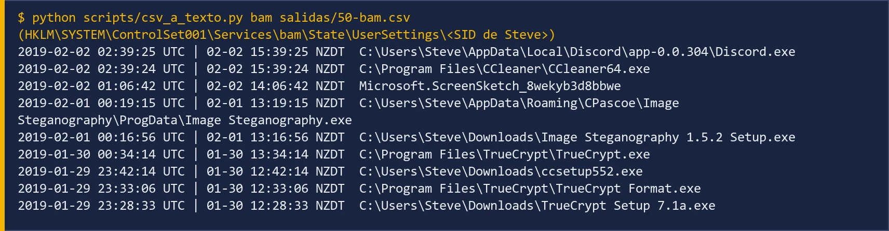
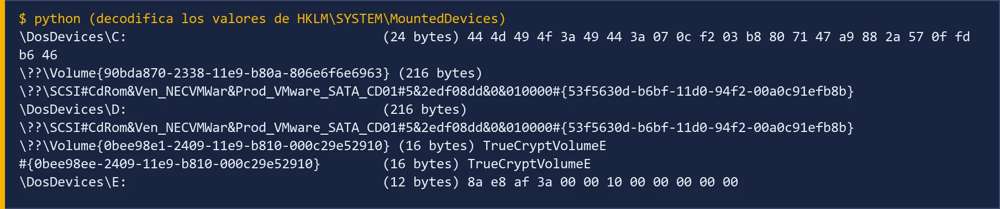
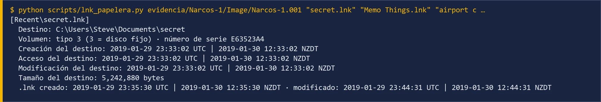
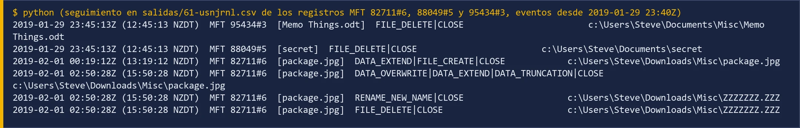
06 / ARCHIVOS ENTREGABLES
07 / BIBLIOGRAFÍA
08 / CONCLUSIÓN
El disco demuestra búsquedas sobre metanfetamina, capturas de rutas hacia el aeropuerto y el punto de entrega, una reserva recibida por Discord y el uso de herramientas de cifrado, esteganografía y borrado. Lo que no demuestra (quién escribía, qué se dijo, qué se ocultó) queda señalado junto con las evidencias que harían falta para confirmarlo.